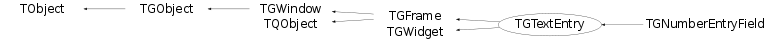

class TGTextEntry: public TGFrame, public TGWidget
TGTextEntry A TGTextEntry is a one line text input widget. Changing text in the text entry widget will generate the event: kC_TEXTENTRY, kTE_TEXTCHANGED, widget id, 0. Hitting the enter key will generate: kC_TEXTENTRY, kTE_ENTER, widget id, 0. Hitting the tab key will generate: kC_TEXTENTRY, kTE_TAB, widget id, 0. This widget has the behaviour e.g. of the "Location" field in netscape. That includes handling Control/Shift key modifiers and scrolling the text. enum TGTextEntry::EEchoMode This enum type describes the ways in which TGTextEntry can display its contents. The currently defined values are:/*
- kNormal - display characters as they are entered. This is the default.
- kNoEcho - do not display anything.
- kPassword - display asterisks instead of the characters actually entered.
See also SetEchoMode(), GetEchoMode(). enum TGTextEntry::EInsertMode This enum type describes the way how typed characters are inserted in the text entry. This mode is switched by "Insert" key./*
- kInsert - typed character are inserted (cursor has shape of short line).
- kReplace - typed characters substitute already typed ones (cursor has the shape of filled rectangle).
enum TGWidget::ETextJustification This enum type (defined in TGWidget.h) describes the text alignment modes. These modes are valid untill text fits the frame width/*
- kTextLeft - left-side text alignment
- kTextRight - right-side text alignment
- kTextCenterX - center text alignment
The key press event handler converts a key press to some line editor action. Here are the default key bindings:/*
- Left Arrow Move the cursor one character leftwards. Scroll the text when cursor is out of frame.
- Right Arrow Move the cursor one character rightwards Scroll the text when cursor is out of frame.
- Backspace Deletes the character on the left side of the text cursor and moves the cursor one position to the left. If a text has been marked by the user (e.g. by clicking and dragging) the cursor will be put at the beginning of the marked text and the marked text will be removed.
- Home Moves the text cursor to the left end of the line. If mark is TRUE text will be marked towards the first position, if not any marked text will be unmarked if the cursor is moved.
- End Moves the text cursor to the right end of the line. If mark is TRUE text will be marked towards the last position, if not any marked text will be unmarked if the cursor is moved.
- Delete Deletes the character on the right side of the text cursor. If a text has been marked by the user (e.g. by clicking and dragging) the cursor will be put at the beginning of the marked text and the marked text will be removed.
- Insert Switches character insert mode.
- Shift - Left Arrow Mark text one character leftwards
- Shift - Right Arrow Mark text one character rightwards
- Control - Left Arrow Move the cursor one word leftwards
- Control - Right Arrow Move the cursor one word rightwards.
- Control - Shift - Left Arrow Mark text one word leftwards
- Control - Shift - Right Arrow Mark text one word rightwards
- Control-A Move the cursor to the beginning of the line
- Control-B Move the cursor one character leftwards
- Control-C Copy the marked text to the clipboard.
- Control-D Delete the character to the right of the cursor
- Control-E Move the cursor to the end of the line
- Control-F Move the cursor one character rightwards
- Control-H Delete the character to the left of the cursor
- Control-K Delete marked text if any or delete all characters to the right of the cursor
- Control-U Delete all characters on the line
- Control-V Paste the clipboard text into line edit.
- Control-X Cut the marked text, copy to clipboard.
- Control-Y Paste the clipboard text into line edit.
Function Members (Methods)
public:
protected:
| static Int_t | TQObject::CheckConnectArgs(TQObject* sender, TClass* sender_class, const char* signal, TClass* receiver_class, const char* slot) |
| Int_t | TGWidget::ClearFlags(Int_t flags) |
| static Bool_t | TQObject::ConnectToClass(TQObject* sender, const char* signal, TClass* receiver_class, void* receiver, const char* slot) |
| static Bool_t | TQObject::ConnectToClass(const char* sender_class, const char* signal, TClass* receiver_class, void* receiver, const char* slot) |
| void | CopyText() const |
| virtual void | TObject::DoError(int level, const char* location, const char* fmt, va_list va) const |
| virtual void | DoRedraw() |
| virtual void | TGFrame::Draw3dRectangle(UInt_t type, Int_t x, Int_t y, UInt_t w, UInt_t h) |
| Int_t | GetCharacterIndex(Int_t xcoord) |
| static const TGGC& | GetDefaultSelectedBackgroundGC() |
| static const TGGC& | GetDefaultSelectedGC() |
| static Time_t | TGFrame::GetLastClick() |
| TString | TGFrame::GetOptionString() const |
| const TGResourcePool* | TGFrame::GetResourcePool() const |
| virtual void* | TGFrame::GetSender() |
| virtual const char* | TQObject::GetSenderClassName() const |
| virtual void | Init() |
| virtual Bool_t | IsCursorOutOfFrame() |
| void | TObject::MakeZombie() |
| void | Paste() |
| virtual void | PastePrimary(Window_t wid, Atom_t property, Bool_t del) |
| virtual void | ScrollByChar() |
| Int_t | TGWidget::SetFlags(Int_t flags) |
| virtual void | TGFrame::StartGuiBuilding(Bool_t on = kTRUE) |
| virtual void | UpdateOffset() |
private:
| TGTextEntry(const TGTextEntry&) | |
| TGTextEntry& | operator=(const TGTextEntry&) |
Data Members
public:
| enum EEchoMode { | kNormal | |
| kNoEcho | ||
| kPassword | ||
| }; | ||
| enum EInsertMode { | kInsert | |
| kReplace | ||
| }; | ||
| enum TGFrame::[unnamed] { | kDeleteWindowCalled | |
| }; | ||
| enum TGWindow::EEditMode { | kEditEnable | |
| kEditDisable | ||
| kEditDisableEvents | ||
| kEditDisableGrab | ||
| kEditDisableLayout | ||
| kEditDisableResize | ||
| kEditDisableHeight | ||
| kEditDisableWidth | ||
| kEditDisableBtnEnable | ||
| kEditDisableKeyEnable | ||
| }; | ||
| enum TObject::EStatusBits { | kCanDelete | |
| kMustCleanup | ||
| kObjInCanvas | ||
| kIsReferenced | ||
| kHasUUID | ||
| kCannotPick | ||
| kNoContextMenu | ||
| kInvalidObject | ||
| }; | ||
| enum TObject::[unnamed] { | kIsOnHeap | |
| kNotDeleted | ||
| kZombie | ||
| kBitMask | ||
| kSingleKey | ||
| kOverwrite | ||
| kWriteDelete | ||
| }; |
protected:
| ETextJustification | fAlignment | *OPTION={GetMethod="GetAlignment";SetMethod="SetAlignment";Items=(kTextLeft="Left",kTextCenterX="Center",kTextRight="Right")}* |
| Pixel_t | TGFrame::fBackground | frame background color |
| Int_t | TGFrame::fBorderWidth | frame border width |
| TGClient* | TGObject::fClient | Connection to display server |
| Atom_t | fClipboard | clipboard property |
| TString | TGWidget::fCommand | command to be executed |
| TBlinkTimer* | fCurBlink | cursor blink timer |
| Int_t | fCursorIX | cursor position in characters |
| Bool_t | fCursorOn | cursor status (on/off) |
| Int_t | fCursorX | cursor position in pixels |
| Int_t | TGFrame::fDNDState | EDNDFlags |
| UInt_t | fDefHeight | default height |
| UInt_t | fDefWidth | default width |
| TGTextEntry::EEchoMode | fEchoMode | *OPTION={GetMethod="GetEchoMode";SetMethod="SetEchoMode";Items=(kNormal="Normal",kNoEcho="No Echo",kPassword="Password")}* |
| UInt_t | TGWindow::fEditDisabled | flags used for "guibuilding" |
| Bool_t | fEdited | kFALSE, if the line edit's contents have not been changed since the construction |
| Int_t | fEndIX | selection end in characters |
| Int_t | fEndX | selection end in pixels |
| UInt_t | TGFrame::fEventMask | currenty active event mask |
| TGFrameElement* | TGFrame::fFE | pointer to frame element |
| FontStruct_t | fFontStruct | text font |
| Bool_t | fFrameDrawn | kTRUE draw itself inside a two-pixel frame, kFALSE draw without any frame |
| Bool_t | fHasOwnFont | kTRUE - font defined locally, kFALSE - globally |
| UInt_t | TGFrame::fHeight | frame height |
| Handle_t | TGObject::fId | X11/Win32 Window identifier |
| TGTextEntry::EInsertMode | fInsertMode | *OPTION={GetMethod="GetInsertMode";SetMethod="SetInsertMode";Items=(kInsert="Insert",kReplace="Replace")}* |
| TList* | TQObject::fListOfConnections | ! list of connections to this object |
| TList* | TQObject::fListOfSignals | ! list of signals from this object |
| UInt_t | TGFrame::fMaxHeight | maximal frame height |
| Int_t | fMaxLen | maximum length of text |
| UInt_t | TGFrame::fMaxWidth | maximal frame width |
| UInt_t | TGFrame::fMinHeight | minimal frame height |
| UInt_t | TGFrame::fMinWidth | minimal frame width |
| const TGWindow* | TGWidget::fMsgWindow | window which handles widget events |
| TString | TGWindow::fName | name of the window used in SavePrimitive() |
| Bool_t | TGWindow::fNeedRedraw | kTRUE if window needs to be redrawn |
| TGGC | fNormGC | normal drawing context |
| Int_t | fOffset | start position of text (in pixels) |
| UInt_t | TGFrame::fOptions | frame options |
| const TGWindow* | TGWindow::fParent | Parent window |
| TGGC | fSelGC | selected text drawing context |
| GContext_t | fSelbackGC | selected background drawing context |
| Bool_t | fSelectionOn | selection status (on/off) |
| Bool_t | TQObject::fSignalsBlocked | ! flag used for suppression of signals |
| Int_t | fStartIX | selection begin in characters |
| Int_t | fStartX | selection begin in pixels |
| TGTextBuffer* | fText | text buffer |
| TGToolTip* | fTip | associated tooltip |
| Int_t | TGWidget::fWidgetFlags | widget status flags (OR of EWidgetStatus) |
| Int_t | TGWidget::fWidgetId | the widget id (used for event processing) |
| UInt_t | TGFrame::fWidth | frame width |
| Int_t | TGFrame::fX | frame x position |
| Int_t | TGFrame::fY | frame y position |
| static Bool_t | TQObject::fgAllSignalsBlocked | flag used for suppression of all signals |
| static const TGGC* | TGFrame::fgBckgndGC | |
| static const TGGC* | TGFrame::fgBlackGC | |
| static Pixel_t | TGFrame::fgBlackPixel | |
| static TString* | fgClipboardText | application clipboard text |
| static Int_t | TGWindow::fgCounter | counter of created windows in SavePrimitive |
| static Window_t | TGFrame::fgDbw | |
| static Int_t | TGFrame::fgDbx | |
| static Int_t | TGFrame::fgDby | |
| static const TGFont* | fgDefaultFont | |
| static Pixel_t | TGFrame::fgDefaultFrameBackground | |
| static const TGGC* | fgDefaultGC | |
| static Pixel_t | TGFrame::fgDefaultSelectedBackground | |
| static const TGGC* | fgDefaultSelectedBackgroundGC | |
| static const TGGC* | fgDefaultSelectedGC | |
| static const TGGC* | TGFrame::fgHilightGC | |
| static Bool_t | TGFrame::fgInit | |
| static UInt_t | TGFrame::fgLastButton | |
| static Time_t | TGFrame::fgLastClick | |
| static const TGGC* | TGFrame::fgShadowGC | |
| static UInt_t | TGFrame::fgUserColor | |
| static const TGGC* | TGFrame::fgWhiteGC | |
| static Pixel_t | TGFrame::fgWhitePixel |
Class Charts
{kind=link}
{kind=link}
{kind=link}
{kind=link}

Function documentation
TGTextEntry(const TGWindow* p, TGTextBuffer* text, Int_t id = -1, GContext_t norm = GetDefaultGC()(), FontStruct_t font = GetDefaultFontStruct(), UInt_t option = kSunkenFrame|kDoubleBorder, Pixel_t back = GetWhitePixel())
Create a text entry widget. It will adopt the TGTextBuffer object (i.e. the text buffer will be deleted by the text entry widget).
TGTextEntry(const TGWindow* parent = 0, const char* text = 0, Int_t id = -1)
Simple text entry constructor.
TGTextEntry(const TString& contents, const TGWindow* parent, Int_t id = -1)
TString GetDisplayText() const
Int_t GetCharacterIndex(Int_t xcoord)
Returns the index of the character to whose left edge xcoord is closest.
void SetFrameDrawn(Bool_t flag = kTRUE)
void SetAlignment(ETextJustification mode = kTextLeft)
Sets the alignment of the text entry. Possible values are kTextLeft(default), kTextRight, kTextCenterX. See also GetAlignment().
void SetInsertMode(TGTextEntry::EInsertMode mode = kInsert)
Sets the mode how characters are entered to the text entry.
void SetText(const char* text, Bool_t emit = kTRUE)
Sets text entry to text, clears the selection and moves the cursor to the end of the line. If necessary the text is truncated to fit MaxLength(). See also GetText().
void SetMaxLength(Int_t maxlen)
Set the maximum length of the text in the editor. If the text is currently too long, it is chopped off at the limit. Any marked text will be unmarked. The cursor position is set to 0 and the first part of the string is shown. See also GetMaxLength().
void SetEchoMode(TGTextEntry::EEchoMode mode = kNormal)
The echo modes available are:
- kNormal - display characters as they are entered. This is the default.
- kNoEcho - do not display anything.
- kPassword - display asterisks instead of the characters actually entered.
It is always possible to cut and paste any marked text; only the widget's own display is affected. See also GetEchoMode(), GetDisplayText().
TString GetMarkedText() const
Returns the text marked by the user (e.g. by clicking and dragging), or zero if no text is marked. See also HasMarkedText().
void Insert(const char* )
Removes any currently selected text, inserts newText, sets it as the new contents of the text entry.
void CursorRight(Bool_t mark = kFALSE, Int_t steps = 1)
Moves the cursor rightwards one or more characters. See also CursorLeft().
void CursorLeft(Bool_t mark = kFALSE, Int_t steps = 1)
Moves the cursor leftwards one or more characters. See also CursorRight().
void CursorWordForward(Bool_t mark = kFALSE)
Moves the cursor one word to the right. If mark is kTRUE, the text is marked. See also CursorWordBackward().
void CursorWordBackward(Bool_t mark = kFALSE)
Moves the cursor one word to the left. If mark is kTRUE, the text is marked. See also CursorWordForward().
void Backspace()
Deletes the character on the left side of the text cursor and moves the cursor one position to the left. If a text has been marked by the user (e.g. by clicking and dragging) the cursor will be put at the beginning of the marked text and the marked text will be removed. See also Del().
void Del()
Deletes the character on the right side of the text cursor. If a text has been marked by the user (e.g. by clicking and dragging) the cursor will be put at the beginning of the marked text and the marked text will be removed. See also Backspace().
void CopyText() const
Copies the marked text to the clipboard, if there is any and GetEchoMode() is kNormal. See also Cut() Paste().
void Paste()
void Cut()
void SelectAll()
Selects all text (i.e. marks it) and moves the cursor to the end. Useful when a default value has been inserted. If the user types before clicking on the widget the selected text will be erased.
void Deselect()
Deselects all text (i.e. removes marking) and leaves the cursor at the current position.
Bool_t HandleKey(Event_t* event)
The key press event handler converts a key press to some line editor action. Here are the default key bindings:
- Left Arrow Move the cursor one character leftwards. Scroll the text when cursor is out of frame.
- Right Arrow Move the cursor one character rightwards Scroll the text when cursor is out of frame.
- Backspace Deletes the character on the left side of the text cursor and moves the cursor one position to the left. If a text has been marked by the user (e.g. by clicking and dragging) the cursor will be put at the beginning of the marked text and the marked text will be removed.
- Home Moves the text cursor to the left end of the line. If mark is TRUE text will be marked towards the first position, if not any marked text will be unmarked if the cursor is moved.
- End Moves the text cursor to the right end of the line. If mark is TRUE text will be marked towards the last position, if not any marked text will be unmarked if the cursor is moved.
- Delete Deletes the character on the right side of the text cursor. If a text has been marked by the user (e.g. by clicking and dragging) the cursor will be put at the beginning of the marked text and the marked text will be removed.
- Insert Switches character insert mode.
- Shift - Left Arrow Mark text one character leftwards
- Shift - Right Arrow Mark text one character rightwards
- Control - Left Arrow Move the cursor one word leftwards
- Control - Right Arrow Move the cursor one word rightwards.
- Control - Shift - Left Arrow Mark text one word leftwards
- Control - Shift - Right Arrow Mark text one word rightwards
- Control-A Move the cursor to the beginning of the line
- Control-B Move the cursor one character leftwards
- Control-C Copy the marked text to the clipboard.
- Control-D Delete the character to the right of the cursor
- Control-E Move the cursor to the end of the line
- Control-F Move the cursor one character rightwards
- Control-H Delete the character to the left of the cursor
- Control-K Delete marked text if any or delete all characters to the right of the cursor
- Control-U Delete all characters on the line
- Control-V Paste the clipboard text into line edit.
- Control-X Cut the marked text, copy to clipboard.
- Control-Y Paste the clipboard text into line edit.
All other keys with valid ASCII codes insert themselves into the line.
Bool_t HandleSelectionRequest(Event_t* event)
Handle request to send current clipboard contents to requestor window.
void PastePrimary(Window_t wid, Atom_t property, Bool_t del)
Paste text from selection (either primary or cut buffer) into text entry widget.
void UpdateOffset()
Updates start text offset according GetAlignment() mode, if cursor is out of frame => scroll the text. See also SetAlignment() and ScrollByChar().
void SetToolTipText(const char* text, Long_t delayms = 500)
Set tool tip text associated with this text entry. The delay is in milliseconds (minimum 250). To remove tool tip call method with text = 0.
void InsertText(const char* text, Int_t pos)
Inserts text at position pos, clears the selection and moves the cursor to the end of the line. If necessary the text is truncated to fit MaxLength(). See also GetText(), SetText(), AppendText(), RemoveText().
void AppendText(const char* text)
Appends text to the end of text entry, clears the selection and moves the cursor to the end of the line. If necessary the text is truncated to fit MaxLength(). See also GetText(), InsertText(), SetText(), RemoveText().
void RemoveText(Int_t start, Int_t end)
Removes text at the range, clears the selection and moves the cursor to the end of the line. See also GetText(), InsertText(), SetText(), AppendText().
void SetFont(FontStruct_t font, Bool_t local = kTRUE)
Changes text font. If local is kTRUE font is changed locally.
void SetFont(const char* fontName, Bool_t local = kTRUE)
Changes text font specified by name. If local is kTRUE font is changed locally.
void SetTextColor(Pixel_t color, Bool_t local = kTRUE)
Changes text color. If local is true color is changed locally.
void SetTextColor(TColor* color, Bool_t local = kTRUE)
Changes text color. If local is true color is changed locally.
const TGGC & GetDefaultSelectedBackgroundGC()
Return graphics context for highlighted frame background.
void SavePrimitive(ostream& out, Option_t* option = "")
Save a text entry widget as a C++ statement(s) on output stream out.
TGTextEntry(const TGTextEntry& )
TGTextEntry& operator=(const TGTextEntry& )